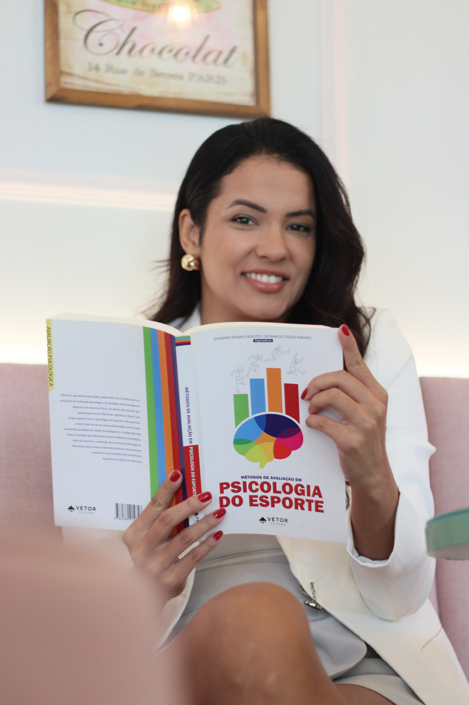
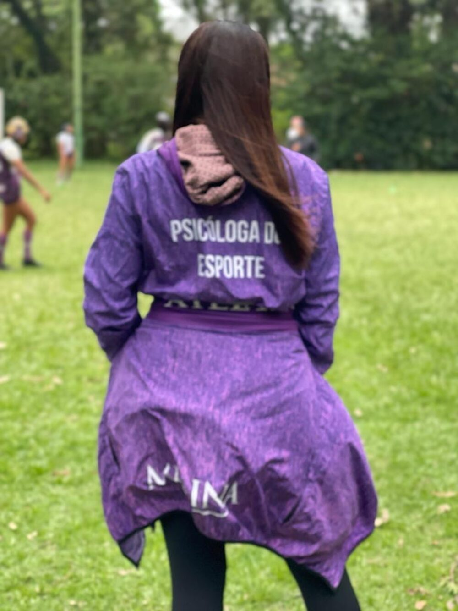
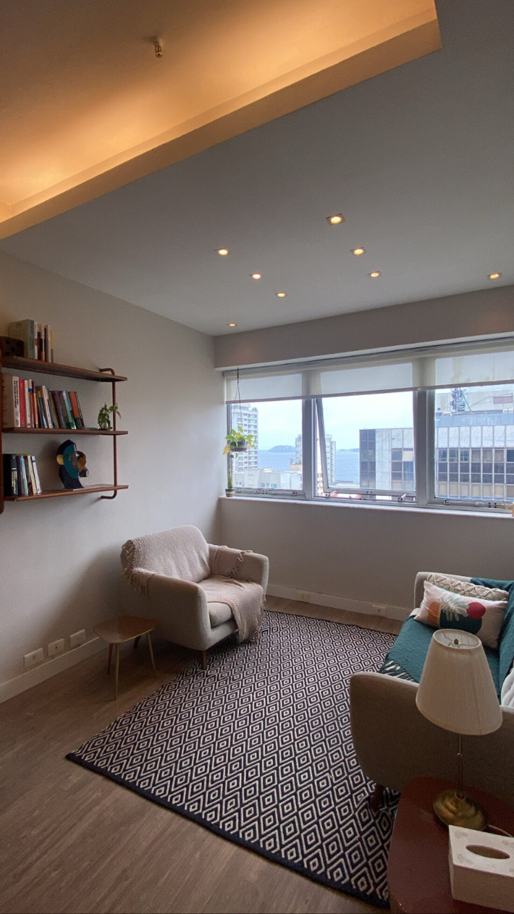
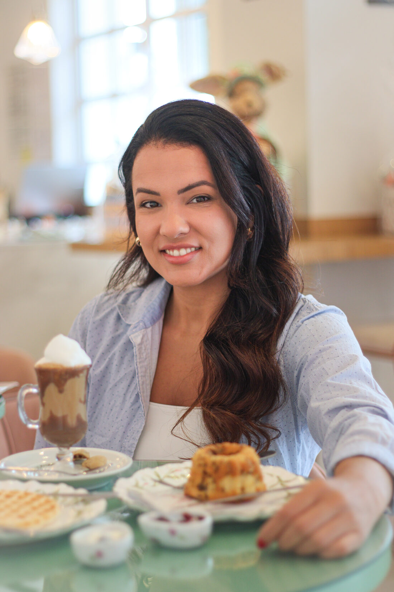

Sou psicóloga clínica e do esporte e atendo online, com a abordagem EMDR. Trabalho com atletas e com quem não é atleta, de crianças a adultos, no Brasil e em outros países.

Sou cuiabana, mãe de dois meninos e ex-atleta de vôlei. Fui pioneira em Psicologia Clínica do Esporte em Mato Grosso e hoje moro no Rio de Janeiro, atendendo online pessoas do Brasil inteiro e de fora dele.
No meu trabalho, ajudo você a entender melhor o que sente e a lidar com isso de um jeito mais saudável. Atendo questões como trauma, ansiedade, luto e a pressão por resultado, tanto na vida de quem faz esporte quanto de quem não faz.
Uso cada um conforme o que faz sentido para você.
Uma abordagem com base científica para tratar trauma, ansiedade e bloqueios na hora de competir. Tem um protocolo de 8 fases, com adaptações para crianças, adolescentes e atletas.
Antes de qualquer técnica, vem a base: aprender a se acalmar, criar segurança por dentro e reconhecer os próprios limites. São ferramentas que ficam com você.
Para quem treina e compete: preparação para a competição, foco, controle da ansiedade e diálogo interno. Vale dentro e fora de quadra.

EMDR é a sigla, em inglês, para Dessensibilização e Reprocessamento por Movimentos Oculares. É uma abordagem reconhecida pela Organização Mundial da Saúde para o tratamento de trauma. Ela ajuda o cérebro a reprocessar memórias que ficaram mal resolvidas e que ainda causam reações no presente. Funciona bem online e costuma ajudar muito quem faz esporte: a derrota que não passa, o erro que volta na cabeça, a lesão que deixou medo no corpo.
De qualquer modalidade, profissionais ou amadores. Performance, recuperação de lesão, ansiedade antes de competir, transição de carreira e a vida que gira em torno do esporte.
Ansiedade, sobrecarga na escola e no esporte, conflitos em casa e questões de identidade. Uso jogos e recursos lúdicos, com a participação da família quando faz sentido.
Para quem quer entender a origem do que sente, e não só aliviar o sintoma. Trauma, luto, sobrecarga, decisões difíceis e momentos de recomeço.
Pais e mães que acompanham a carreira esportiva dos filhos também sentem o peso. Ofereço orientação para lidar com a pressão, a relação com treinadores e as decisões de carreira.
Atendo por videochamada pessoas no Brasil, nos Estados Unidos, na Austrália e onde mais a vida levar. O EMDR online tem se mostrado tão eficaz quanto o presencial, com o protocolo adaptado.
Você me conta o que te trouxe. Eu escuto, faço perguntas e a gente combina por onde começar. Sem pressa e sem promessa fácil.
Antes de tocar no que dói, a gente constrói segurança: formas de se acalmar, um lugar seguro por dentro e recursos seus. Isso já é metade do trabalho.
Quando você está pronta, a gente trabalha com EMDR o que precisa ser elaborado. No seu ritmo e com cuidado.
O que aparece na sessão vira recurso para o dia a dia. Você sai com ferramentas, e não só com conversa.

Deixo algumas aqui, para você também.
Para onde a sua cabeça volta quando o corpo dispara. Como criar uma âncora de segurança por dentro em poucos minutos.
Uma respiração que ajuda a desacelerar o coração em cerca de um minuto e meio. Boa antes de uma cobrança, de uma conversa difícil ou de dormir.
Você não surtou do nada. Por que sair do seu equilíbrio não é fraqueza, e como ampliar o seu limite.
Sim. Atendo exclusivamente online há anos, com pacientes no Brasil e no exterior, e o EMDR tem protocolos validados para videochamada. A maioria dos meus pacientes chega por indicação de quem já fez o processo comigo.
Não. O EMDR trabalha qualquer memória que ficou mal resolvida e que ainda gera reações hoje: uma derrota marcante, uma humilhação, um término, uma lesão, uma cobrança antiga. Se ainda dói quando você lembra, dá para trabalhar.
Com adaptações lúdicas: jogos terapêuticos, desenhos e recursos de imaginação. Os pais participam na medida certa, com devolutivas combinadas e sigilo preservado.
Em geral, sessões semanais de 50 minutos. Atletas em fase de competição e processos de EMDR mais intensivos podem ter outro formato, sempre combinado caso a caso.
O agendamento é pelo WhatsApp, com a minha assistente, que cuida da agenda, dos pagamentos e da nota fiscal. É só clicar no botão de agendar e mandar uma mensagem.
Você me conta o que te trouxe e a gente vê se faz sentido seguir junto. O agendamento é feito pelo WhatsApp, com a minha assistente.
agendar pelo WhatsApp